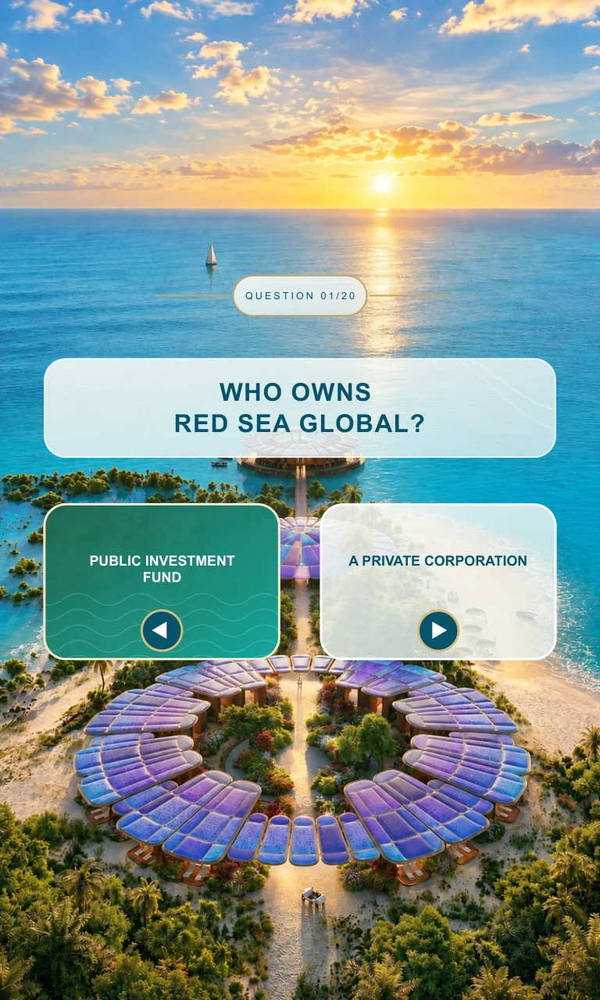
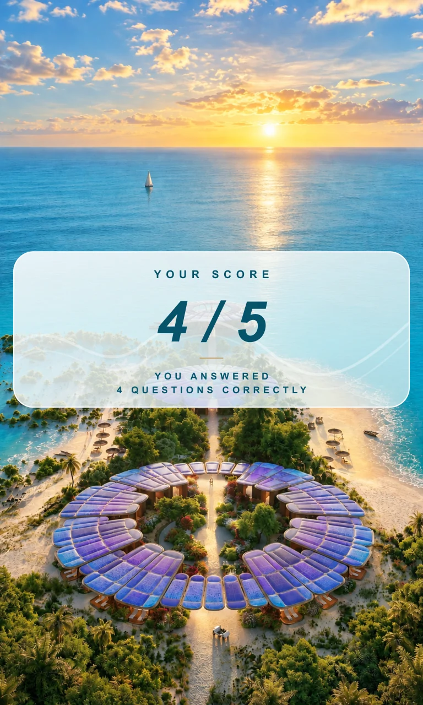
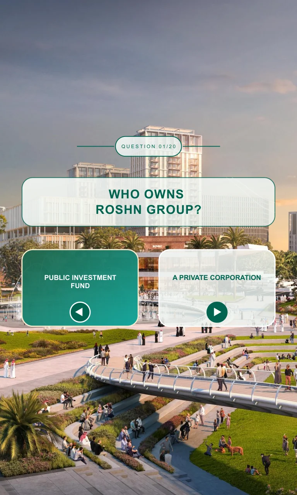
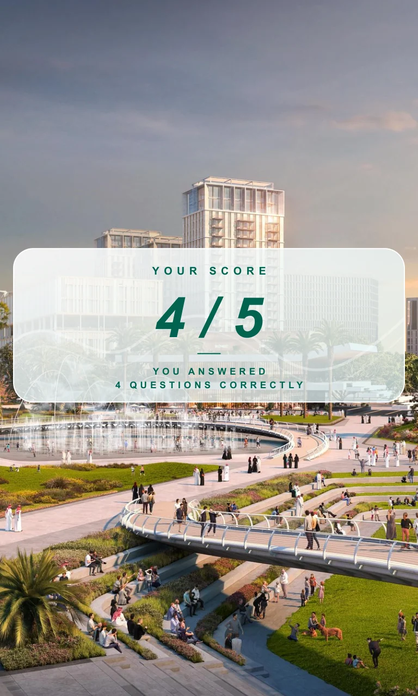
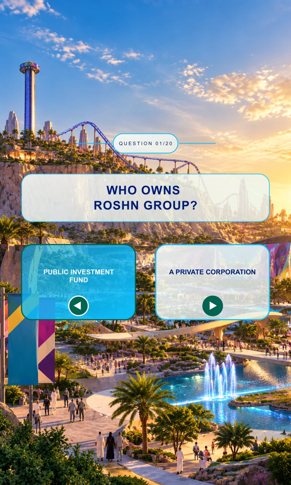
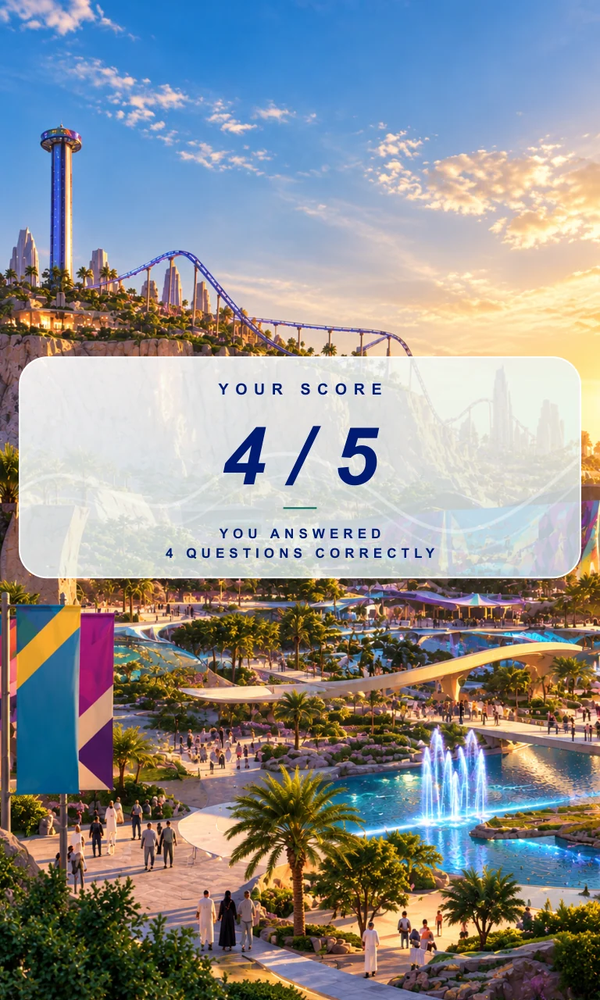
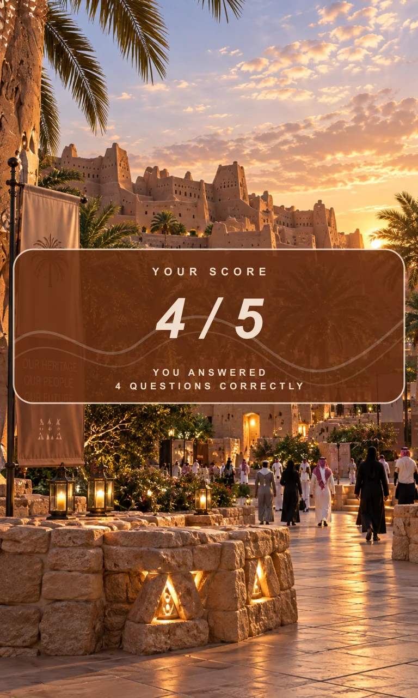
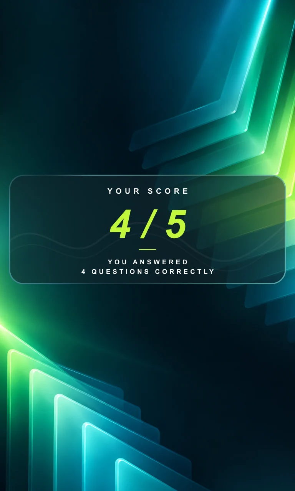

Begin with instructions
The portrait standby layout introduces selection and confirmation as separate actions.
A common flow for different physical inputs.
Explore the story
Keep a quiz sequence consistent while accommodating alternative control schemes.
A shared application structure covers standby, questions, confirmation and score. The prepared portrait screen explains fish-based selection and turtle-based confirmation.
The portrait standby layout introduces selection and confirmation as separate actions.
The documented flow highlights a left or right answer before accepting a confirmation input.
The shared specification ends a five-question sequence with a score screen and a return to standby.
Explore the complete compositions and interface states. Select any image for a closer look.
11 / PROJECT IMAGES
Select a view to explore.
Two instruction cards map selection and confirmation to the fish and turtle controls.
The question sits above two large answer choices, with a small progress marker.

A translucent panel gives the result its own clear state. Four out of five is sample artwork.

The same question hierarchy is adapted to an urban landscape and green answer cards.

A wide translucent result panel leaves the setting visible behind it.

Brighter colors adapt the shared layout to the theme-park setting. The native template retains the urban-profile example question.

The result state carries the same translucent treatment into a more colorful scene.

Warm panels and a brown palette align the quiz with a heritage setting. The supplied template retains its urban-profile example question.
The score panel uses a warm translucent surface above the architectural backdrop.

A metallic knob illustration explains rotation for selection and pressing for confirmation.
Electric green score type contrasts with the dark geometric background.

Structure, interaction and visual decisions that give the work its character.
RoleQuiz UI, shared engine, content configuration and physical-input integration; confirm the personally owned modules.
AssetsCredit WebView2, question content, fonts and source-provided resort, fish and turtle artwork separately. Illustration or geometry authorship, collaborator or AI contributions and rights to publish remain unverified. Five profile names do not prove five independent commissions.
StatusInterface and application-source study. The current flow specification was inspected directly; physical controls, complete runtime behavior and event delivery were not tested in this portfolio pass.